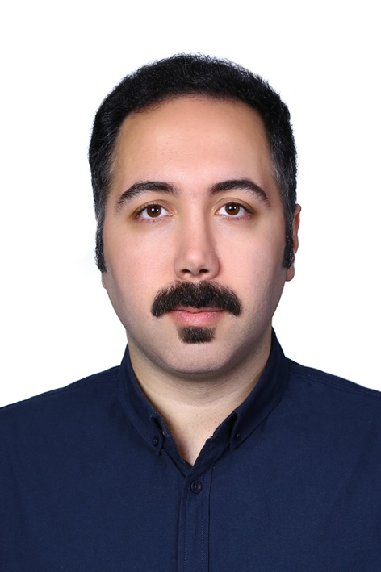
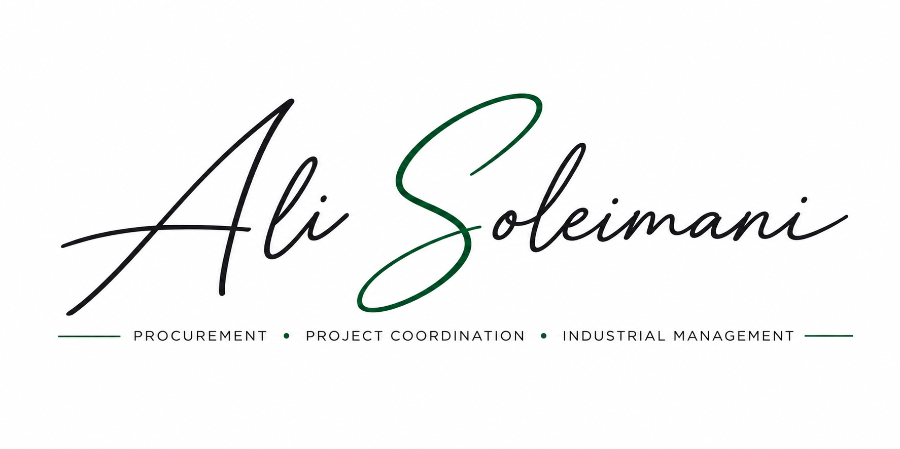

Procurement
Strategic sourcing, supplier qualification and negotiation.
I combine commercial thinking with technical understanding and over ten years of industrial experience. Today, I study International Management and teach Strategic Sourcing at Hochschule Fresenius in Cologne.

Strategic sourcing, supplier qualification and negotiation.
Connecting engineering, suppliers and project teams.
Evaluating contracts, understanding costs and communicating clearly.
Coordinating suppliers and stakeholders across Europe and Asia.
